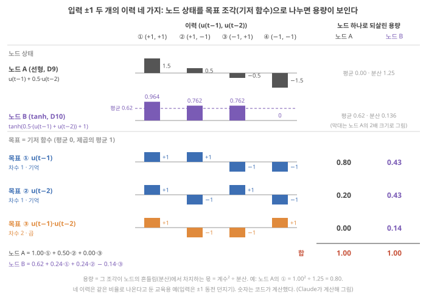
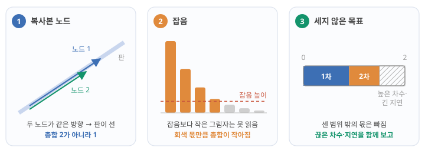

Day 19. information processing capacity와 노드 수 한계
Phase 2 · RC는 왜, 어떻게 작동하는가
이번 질문 reservoir가 과거 입력의 어떤 함수를 얼마나 되살리는지 어떻게 재고, 총량은 왜 노드 수를 넘지 못하나?
왜 배우나 내 device 전류 시계열이 몇 개의 독립 상태를 주는지가 capacity를 정한다.
오늘의 장면 목표 함수(지연 입력의 곱) + 상태 → 선형 readout 오차 → capacity C → 합 ≤ 독립 상태 수 N
오늘 반드시 C = 1 − 오차/분산. 차수 1의 합이 MC, 전 차수의 합이 IPC이며 노드 N개의 합은 N을 넘지 못한다.
나중에 봐도 됨 Legendre 다항식 계산 · 원 논문 정리의 등호 조건 · 그림자 수식
넘어가는 기준 '오늘 반드시'를 내 말로 말할 수 있으면 충분합니다.
이후 쓰이는 곳 Day 21–22 MC 실습 · Day 23–24 지연별 MC · Day 25–26 rank로 독립 상태 · Day 49–50 device 배열
지난 학습 복습
지난 학습 단위(Day 18 · 노드를 늘리는 법과 device 비선형의 쓸모)의 핵심을 다른 예로 확인합니다. 고르는 즉시 맞았는지와 이유가 보입니다. 틀려도 아래 학습자료는 그대로 열려 있고, 틀린 문제에는 다시 볼 곳이 붙습니다.
사전 테스트 (선택)
사전 테스트 펼치기 · 배우기 전에 짐작해 보는 문제 (선택)
학습자료
Day 15–16에서 reservoir가 기억을 갖는 법을, Day 17–18에서 비선형을 갖는 법을 따로 보았습니다. 오늘은 둘을 함께 놓고 묻습니다. 기억은 길수록, 비선형은 강할수록 좋은가? 이 질문은 이온 device 연구에 바로 닿습니다. "더 긴 retention(바뀐 상태가 유지되는 시간)", "더 큰 정류비(한 방향 전류 ÷ 반대 방향 전류)", "더 큰 히스테리시스(전압을 올릴 때와 내릴 때 전류가 다른 길로 가는 정도)"가 논문의 개선 목표로 자주 나오는데, 그것들이 reservoir로서 '더 좋음'을 뜻하는지가 오늘의 끝에 놓입니다.
이번 주제에서 답할 질문 — 아래 학습 구간들이 차례로 답합니다.
- 기억과 비선형은 각각 무엇을 사 주나? 과제는 무엇을 요구하나?
- 둘을 같은 저울로 재는 법: 목표 하나의 용량, 기저 함수, 그리고 그 합인 information processing capacity(IPC)란?
- 왜 그 총량은 노드 수를 넘지 못하나? (노드 2개가 만드는 평면의 그림자로 손 계산)
- 기억과 비선형은 정말 서로 자리를 빼앗나? (시뮬레이션)
- 노드 수가 아니라 '서로 다른' 노드 수: 같은 이온 device를 여러 개 놓으면?
- 그래서 좋은 reservoir란 무엇인가?
1. 두 자원: 기억과 비선형
상황. 두 논문이 한쪽은 "기억(MC)이 늘었다", 다른 쪽은 "비선형이 늘었다"고 씁니다. 둘 중 어느 쪽이 내 과제에 필요한지 어떻게 정할까요?
왜 지금? Day 15–16에서 기억을, Day 17–18에서 비선형을 따로 보았으니, 이제 둘이 한 과제 안에서 얼마씩 필요한지 묻습니다.
어디에 쓰이나? 내 device 개선(retention 증가, 정류비 증가)이 과제가 요구하는 쪽을 늘리는지 판단할 때 씁니다.
끝나면 할 수 있는 것. 기억(Day 15–16)과 비선형(Day 17–18)이 각각 무엇을 가능하게 하는지 한 줄씩 되짚고, NARMA10 같은 과제가 둘을 '얼마나' 요구하는지 말할 수 있다.
되짚기. Day 15의 fading memory: 지금 상태에 \(k\)단계 전 입력의 몫이 \(d^k\)만큼 남아, 과거가 필요한 질문("한 단계 전에 1이었나?")에 답할 수 있게 합니다. 노드 하나의 기억은 합이 1인 예산이었습니다(Day 16의 memory budget). Day 17의 비선형: superposition principle(두 입력을 함께 넣은 응답 = 따로 넣은 응답의 합이라는 성질)을 깨서 입력들의 곱(XOR = 두 입력의 곱, 3-parity = 세 입력의 곱)을 상태에 남겨, 선형 readout이 가중합으로는 못 만드는 답을 꺼내게 합니다.
과제는 둘을 정해진 양만큼 요구한다. Day 21–22에서 직접 돌릴 NARMA10을 미리 봅니다. NARMA10은 0~0.5 사이의 무작위 입력 \(u(t)\)를 넣고, 정해진 식 \(y(t+1) = 0.3\,y(t) + 0.05\,y(t)\sum_{i=0}^{9} y(t-i) + 1.5\,u(t-9)\,u(t) + 0.1\)로 만든 출력 \(y\)를 reservoir가 따라 하게 하는 시험 과제입니다(식은 외우지 않아도 되고, 항마다의 뜻은 Day 21–22에서 풉니다). 지금 볼 곳은 두 군데입니다. \(y(t) \times y(t-i)\)와 \(u(t-9) \times u(t)\)는 두 값의 곱이고(곱한 값이 둘이라 '2차' 비선형이라고 부릅니다. 차수의 정확한 뜻은 뒤의 IPC 절), 그 곱에 들어가는 값이 9–10단계 전까지 거슬러 갑니다(기억). Stepney도 NARMA 계열의 (2차) 비선형성이 이런 곱 항들에서 오고 이전 \(N\)개 상태의 기억도 필요하다고 씁니다. Stepney 2024, p.676 Stepney의 \(x\), \(N\)을 여기서는 \(y\), 10으로 바꿔 적음 ★ 그래서 NARMA10에는 약 10단계의 기억과 2차(두 값의 곱) 비선형이 함께 필요합니다. 기억이 3단계뿐이면 비선형이 아무리 강해도 9–10단계 전 값이 든 곱을 만들 재료가 없고, 기억이 100단계여도 곱을 못 만들면 2차 항을 흉내 낼 수 없습니다. 지연 XOR은 2단계 기억 + 2차, 3-parity는 3단계 기억 + 3차입니다(XOR·parity).
무엇을 볼지. 그림 1의 가로축은 과제가 쓰는 가장 오래된 입력이 몇 단계 전인지(필요한 기억), 세로축은 몇 개의 입력을 곱해야 하는지(필요한 비선형의 차수)입니다. 점 하나가 과제 하나이고, 두 음영은 어떤 reservoir가 덮을 수 있는 범위의 예입니다.

그러니 질문을 바꿔야 합니다. "기억이 길수록 좋은가?"가 아니라 "과제가 요구하는 기억과 비선형을, reservoir가 충분히 그리고 동시에 줄 수 있는가?" 이 질문에 답하려면 기억과 비선형을 같은 단위로 재는 저울이 필요합니다.
- 기억 = 지난 입력의 흔적(Day 15–16), 비선형 = 입력들의 곱·굽힘(Day 17–18). 둘은 다른 일을 한다.
- 과제는 둘을 정해진 양만큼 요구한다: NARMA10 ≈ 10단계 기억 + 2차 곱 Stepney 2024, p.676, 지연 XOR = 2단계 + 2차, 3-parity = 3단계 + 3차.
- 바른 질문: 과제가 요구하는 기억과 비선형을 동시에 줄 수 있나?
2. Information processing capacity: 목표 하나를 얼마나 되살리나
상황. 기억도 비선형도 "얼마나"로 말하려면 하나의 저울이 필요합니다. 논문의 MC, IPC 숫자가 무엇을 재는지 읽을 수 있어야 합니다.
왜 지금? 앞에서 과제가 기억과 비선형을 일정량 요구한다고 했으니, 상태가 그것을 얼마나 되살리는지 재는 방법을 봅니다.
어디에 쓰이나? 논문의 MC·IPC 값을 내 device 시계열로 계산해 비교할 때 씁니다.
끝나면 할 수 있는 것. 용량 \(C = 1 - (\text{평균 제곱 오차})/(\text{목표의 분산})\)을 숫자로 계산하고, 네 가지 이력 예(입력 ±1 두 개)에서 기억 항(차수 1)과 곱 항(차수 2)의 용량을 구해 노드 하나의 용량을 모두 더하면 왜 1이 되는지, 그리고 MC와 IPC가 그 합이라는 것을 말할 수 있다.
Information processing capacity(IPC) ① 목표 하나의 용량: 상태로 목표를 얼마나 되살리나
이 기초는 세 걸음입니다. ① 목표 하나의 용량(여기) → ② 목표를 이루는 조각(기저 함수)과 차수, 그 합인 MC·IPC(바로 아래 기초) → ③ 그 합이 노드 수에 묶이는 이유와 원 논문의 조건(상한과 조건).
왜 필요한가. 기억은 "몇 단계 전 입력을 되살리나"로, 비선형은 "XOR을 맞히나"로 따로 재면 둘을 비교할 수 없습니다. 둘을 같은 저울에 올리려면 "어떤 목표 함수든 상태에서 얼마나 잘 되살리나"라는 하나의 질문으로 바꿉니다.
목표 하나의 용량. 입력 이력으로 정해지는 목표 신호 \(f(t)\)를 하나 정합니다. 예: \(f(t) = u(t-2)\)(두 단계 전 입력, 기억을 묻는 목표), \(f(t) = u(t-1) \cdot u(t-2)\)(두 입력의 곱, 비선형을 묻는 목표). Reservoir 상태로 선형 readout을 학습해(최소제곱) \(f\)를 흉내 낸 값을 \(\hat{f}\)("에프 햇". 모자 표시는 '추정한 값'이라는 뜻)라 하면, 그 목표의 용량은
\[ C_f = 1 - \frac{\langle (f - \hat{f})^2 \rangle}{\mathrm{Var}(f)} \]
- 평균 기호 \(\langle \cdot \rangle\). 꺾쇠 안의 양을 시간 단계마다 계산한 뒤, 단계 수 \(n\)으로 나눈 평균입니다(시험 구간에서 냄). 예: 네 단계의 오차 \(f - \hat{f}\)가 −1, 1, −1, 1이면 제곱은 1, 1, 1, 1이고 \(\langle (f-\hat{f})^2 \rangle = 4/4 = 1\)입니다. 그래서 분자는 "오차 제곱의 평균"(평균 제곱 오차, mean squared error)입니다.
- 분산 \(\mathrm{Var}(f)\). 목표가 자기 평균에서 얼마나 흩어지나. 숫자 넷으로: 목표 값이 1, 2, 3, 6이면 평균은 3, 평균에서 뺀 값은 −2, −1, 0, 3, 그 제곱은 4, 1, 0, 9로 합이 14입니다. 개수 4로 나누면 분산 3.5, 표본 분산(개수−1 = 3으로 나눔)이면 약 4.67입니다. 분산의 제곱근이 표준편차입니다(이 교재의 기본은 \(n-1\)로 나눈 표본 표준편차). ★ Day 19–20의 용량 식에서는 분산도 개수 \(n\)으로 나눕니다. 분자의 \(\langle \cdot \rangle\)가 \(n\)으로 나누니 분모도 같은 잣대로 맞추는 것이고(아래 단계 4에서 어긋나면 어떻게 되는지 봅니다), 뒤에서 볼 시뮬레이션 숫자를 낸 코드도 \(n\)으로 나눕니다. 시험 구간이 수천 단계라 \(n\)과 \(n-1\)의 차이는 무시할 만합니다. 정식 설명은 분산·상관².
- 단위: 무차원, 0~1.
- 결과의 뜻: 1이면 완벽히 되살림, 0이면 평균값만 말하는 것과 같음(Day 13–14의 NMSE를 1에서 뺀 것). Singh 2026의 3.2절 식이 이것이고, 목표 함수의 다항 차수와 그것을 만든 입력 지연으로 목표를 구별합니다. Singh 2026, p.13
네 단계로 처음부터 끝까지. 식의 조각이 실제로 어떻게 맞물리는지, 시간 네 단계짜리 장난감 예로 따라갑니다(교육용 예. 숫자는 손으로 확인할 수 있습니다).
단계 1 — 목표와 상태를 적는다. 시간 네 단계에서 목표가 \(f\) = 1, 2, 3, 6이고, readout이 볼 수 있는 것은 노드 하나의 상태 \(x\) = 2, 1, 4, 5라고 합시다(Day 16의 상관계수 예의 두 숫자 열 \(a\), \(b\)를 그대로 가져왔습니다). 선형 readout이 할 수 있는 일은 \(\hat{f} = w_0 + w_1 x\), 곧 "상태에 숫자 \(w_1\)을 곱하고 상수 \(w_0\)을 더하기"뿐입니다.
단계 2 — readout을 맞춘다(최소제곱). 오차 제곱의 합을 가장 작게 하는 \(w_1\)은 (평균을 뺀 값끼리 곱해 더한 것) ÷ (\(x\) 쪽 제곱합)입니다(Readout 학습의 \(w = \sum xy / \sum x^2\)를 평균을 뺀 값에 쓴 것). 평균을 뺀 값은 \(f\): −2, −1, 0, 3, \(x\): −1, −2, 1, 2이므로 \(w_1 = (2 + 2 + 0 + 6)/(1 + 4 + 1 + 4) = 10/10 = 1\)이고, \(w_0 = (f\text{의 평균}) - w_1 \times (x\text{의 평균}) = 3 - 3 = 0\)입니다. 그래서 \(\hat{f}\) = 2, 1, 4, 5.
단계 3 — 분자: 오차 제곱의 평균. \(f - \hat{f}\) = −1, 1, −1, 1, 제곱 1, 1, 1, 1, 평균 \(\langle (f-\hat{f})^2 \rangle = 1\).
단계 4 — 분모로 나눠 1에서 뺀다. \(\mathrm{Var}(f) = 14/4 = 3.5\)(\(n\) = 4로 나눔). \(C = 1 - 1/3.5 \approx 0.714\). 목표의 흔들림 3.5 가운데 1만큼을 놓쳐, 약 71%를 되살렸다는 뜻입니다. 분모만 \(n-1\) = 3으로 나눈 4.67을 쓰면 \(1 - 1/4.67 \approx 0.786\)이 되어 다음 단계의 값과 어긋납니다. 분자와 분모를 같은 \(n\)으로 나누는 이유입니다.
단계 5 — 상관²과 비교한다. Day 15–16에서 같은 두 숫자 열의 상관계수는 \(10/\sqrt{14 \times 10} \approx 0.845\)였고, 제곱하면 \(100/140 \approx 0.714\)로 단계 4와 같습니다. 최소제곱으로 맞춘 바로 그 데이터에서 계산하면 "1 − 오차/분산"은 목표와 readout 출력의 상관²과 정확히 같습니다(회귀분석에서 결정계수(coefficient of determination) R²의 성질, 일반 교과 내용 확인). 학습에 쓰지 않은 시험 구간에서는 거의 같을 뿐 정확히 같지는 않습니다. 기억 용량을 처음 정의한 Jaeger의 식도 이 상관²(공분산² ÷ 두 분산의 곱)으로 적혀 있습니다. Stepney 2024, p.679
작은 숫자로. 목표의 분산이 1.0이고 readout의 평균 제곱 오차가 0.36이면 \(C = 1 - 0.36/1.0 = 0.64\)입니다. 단계 5처럼 이것은 목표와 readout 출력의 상관계수 0.8의 제곱이고, Day 15–16의 "되살리는 정도"와 같은 양입니다.
용량 1과 용량 0은 무엇을 뜻하나. Day 16의 memory budget의 노드 하나 \(x(t) = d\,x(t-1) + u(t)\)(입력은 서로 독립인 난수)로 봅니다.
- 용량 1: \(d = 0\)이면 \(x(t) = u(t)\)입니다. 목표 \(u(t)\)에 대해 readout이 \(\hat{f} = x\)로 두면 오차가 매 단계 0이라 \(C = 1 - 0 = 1\). 완벽히 되살립니다.
- 용량 0: 같은 노드(\(d = 0\))에 목표 \(u(t-1)\)을 주면, 지금 상태 \(x(t) = u(t)\)에는 한 단계 전 입력의 흔적이 전혀 없습니다. 어떤 weight도 도움이 안 되니 readout의 최선은 늘 목표의 평균(여기서 0)을 말하는 것이고, 그때 평균 제곱 오차가 목표의 분산과 같아져 \(C = 1 - 1 = 0\)입니다. 시험 구간에서 계산값이 음수로 나오면(평균만 말하는 것보다도 못하면) 0으로 둡니다.
- 그 사이: \(d = 0.5\)면 목표 \(u(t), u(t-1), u(t-2), u(t-3)\)의 용량이 0.75, 0.19, 0.047, 0.012, …입니다(Day 15–16의 \(d^{2k}(1-d^2)\)).
목표마다 더하면. 이 \(d = 0.5\) 노드의 용량을 모든 지연에 대해 더하면 0.75 + 0.19 + 0.047 + 0.012 + … = 1입니다. 노드가 하나(\(N = 1\))라 합이 1을 넘지 못한 것이고, 이것이 "용량의 총합은 노드 수를 넘지 못한다"(뒤의 그림자 절)의 가장 작은 예입니다. 이 노드는 선형이라 용량 1이 모두 '지난 입력을 그대로 되살리는 일'(다음 기초의 차수 1)에 쓰였습니다.
Information processing capacity(IPC) ② 기억 항과 곱 항: 입력 ±1 두 개의 네 가지 이력으로
무엇을 하려는가. 위에서는 목표가 아무 숫자 열이었습니다. 이제 목표를 information processing capacity가 실제로 쓰는 것, 곧 지난 입력 하나(\(u(t-1)\), 기억을 묻는 목표)와 지난 입력 둘의 곱(\(u(t-1)\,u(t-2)\), 비선형을 묻는 목표)으로 바꿉니다. 손으로 끝까지 계산하려고 세계를 가장 작게 줄입니다. 가정 입력은 매 단계 +1 또는 −1이 동전 던지기처럼 같은 확률로 나오고(Day 17–18의 ±1 표기), 노드의 상태는 최근 두 입력 \(u(t-1)\), \(u(t-2)\)로만 정해진다고 둡니다. 그러면 가능한 이력은 (+1, +1), (+1, −1), (−1, +1), (−1, −1)의 네 가지뿐이고, 긴 입력열에서 이 넷은 같은 비율로 나옵니다. ★ 그래서 시간 평균 \(\langle \cdot \rangle\)은 네 이력의 평균이 됩니다.
비교할 노드: 선형 A와 \(\tanh\) B.
- 노드 A (선형, Day 15–16). Day 15–16의 노드 \(x(t) = d\,x(t-1) + u(t)\)를 \(d = 0.5\)로, 0에서 시작해 두 입력만 넣은 것입니다: \(x_A = u(t-1) + 0.5\,u(t-2)\). 한 단계 전 입력은 그대로, 두 단계 전 입력은 절반만 남았습니다(그보다 오래된 입력은 이 장난감에서 지웠습니다).
- 노드 B (\(\tanh\), Day 17–18). Day 17의 곱 특징 노드의 노드 \(h = \tanh(u_1 + u_2)\)(입력 0/1)를 ±1 표기로 옮긴 것입니다: \(x_B = \tanh\big(0.5\,(u(t-1) + u(t-2)) + 1\big)\). 입력 +1을 Day 17–18의 1로, −1을 0으로 읽으면 값이 Day 17–18과 똑같이 0.964, 0.762, 0.762, 0입니다.
무엇을 볼지. 그림 2에서 줄 하나가 신호 하나입니다. 칸 ①–④는 네 가지 이력이고, 막대는 그 이력에서의 값입니다(막대가 붙은 가로선이 0). 위 두 줄은 노드 상태, 아래 세 줄은 목표입니다. 노드 줄의 막대 모양이 어느 목표 줄의 모양을 닮았는지 보세요. 오른쪽 숫자는 그 목표를 그 노드 하나로 되살린 용량입니다.

그림을 따라: 노드 A로 목표 \(u(t-1)\) 되살리기. 계산 방법은 위 네 단계 예와 같습니다.
단계 1 — 숫자를 적는다. 목표 \(u(t-1)\) = +1, +1, −1, −1(그림 2의 목표 ① 줄), 노드 A = 1.5, 0.5, −0.5, −1.5(노드 A 줄). 둘 다 평균이 0이라 readout의 상수 \(w_0\)은 0입니다.
단계 2 — readout을 맞춘다. \(w_1\) = (곱의 합) ÷ (노드 값의 제곱합) = (1.5 + 0.5 + 0.5 + 1.5)/(2.25 + 0.25 + 0.25 + 2.25) = 4/5 = 0.8. 그래서 \(\hat f\) = 1.2, 0.4, −0.4, −1.2.
단계 3 — 용량. 오차 \(f - \hat f\) = −0.2, 0.6, −0.6, 0.2, 제곱의 평균 (0.04 + 0.36 + 0.36 + 0.04)/4 = 0.2. 목표의 분산은 (1 + 1 + 1 + 1)/4 = 1이므로 \(C = 1 - 0.2/1 = 0.8\).
단계 4 — 나머지 두 목표. 목표 \(u(t-2)\) = +1, −1, +1, −1이면 곱의 합 = 1.5 − 0.5 − 0.5 + 1.5 = 2, \(w_1 = 2/5 = 0.4\), 오차 제곱의 평균 (0.16 + 1.44 + 1.44 + 0.16)/4 = 0.8, \(C = 0.2\). 곱 목표 \(u(t-1)\,u(t-2)\) = +1, −1, −1, +1이면 곱의 합 = 1.5 − 0.5 + 0.5 − 1.5 = 0이라 \(w_1 = 0\), readout은 평균 0만 말할 수 있어 \(C = 0\). 셋을 더하면 0.8 + 0.2 + 0 = 1입니다.
조각으로 나누기: 기저 함수. 노드 A는 목표 줄들로 정확히 다시 쓸 수 있습니다: \(x_A = 1 \cdot u(t-1) + 0.5 \cdot u(t-2) + 0 \cdot u(t-1)\,u(t-2)\). 노드 B도 네 칸에 대입해 확인하면 \(x_B = 0.622 + 0.241\,u(t-1) + 0.241\,u(t-2) - 0.140\,u(t-1)\,u(t-2)\)입니다(이력 ①(+1, +1): 0.622 + 0.241 + 0.241 − 0.140 = 0.964, 이력 ④(−1, −1): 0.622 − 0.241 − 0.241 − 0.140 = 0.000). ★ 이렇게 상수 1, \(u(t-1)\), \(u(t-2)\), \(u(t-1)\,u(t-2)\)처럼 숫자를 곱해 더하면 이 세계의 어떤 신호든 만들 수 있는 조각을 기저 함수(basis function)라고 부릅니다. 이력이 넷이고 조각도 넷이라, 최근 두 입력으로 정해지는 값이라면 무엇이든 네 조각의 조합으로 꼭 한 가지 방법으로 쓸 수 있습니다. 노드 B의 곱 조각 계수 −0.140은 Day 17–18에서 구한 '곱의 몫' \(0.964 - 2 \times 0.762 = -0.560\)을 4로 나눈 값입니다(±1 표기로 옮기면서 생긴 배율).
직교: 조각끼리 겹치지 않는다. 두 조각을 이력마다 곱해 평균 낸 값이 0이면 둘은 직교(orthogonal)한다, 곧 서로 겹치지 않는다고 합니다. 예: \(u(t-1)\) 줄과 \(u(t-2)\) 줄을 칸마다 곱하면 +1, −1, −1, +1로 평균 0입니다. \(u(t-1)\)과 곱 \(u(t-1)\,u(t-2)\)를 곱하면 \(u(t-1)^2\,u(t-2) = u(t-2)\)(±1의 제곱은 1)라 역시 평균 0입니다. 직교이기 때문에 계수 하나하나를 그 조각과의 곱의 평균으로 따로따로 구할 수 있습니다. 노드 B와 \(u(t-1)\): (0.964 + 0.762 − 0.762 − 0)/4 = 0.241. 또 한 조각의 몫이 다른 조각에서 두 번 세어지지 않습니다.
용량 = 그 조각이 노드의 흔들림에서 차지하는 몫. 조각들이 직교이고 각 조각의 제곱의 평균이 1이라, 노드의 분산은 상수를 뺀 계수들의 제곱합입니다. 노드 A는 \(1^2 + 0.5^2 + 0^2 = 1.25\), 노드 B는 \(0.241^2 + 0.241^2 + 0.140^2 \approx 0.136\). 목표 하나의 용량은 그 조각의 몫(계수² ÷ 분산)입니다. 노드 A의 \(u(t-1)\)은 \(1/1.25 = 0.80\)(위 단계 3과 같은 값), \(u(t-2)\)는 \(0.25/1.25 = 0.20\), 곱은 0입니다. 노드 B는 \(0.058/0.136 \approx 0.43\), 0.43, \(0.0196/0.136 \approx 0.14\)입니다. 몫을 모두 더하면 전체이니 노드 하나의 합은 1입니다. Day 15–16의 "노드 하나의 memory budget = 1"을 곱 항까지 넓힌 것입니다. 노드 A는 1을 모두 기억 항에 썼고, 노드 B는 0.86을 기억 항에, 0.14를 곱 항에 나눠 썼습니다. 계산
차수: 목표가 입력 몇 개를 곱한 것인가. 목표를 입력의 다항식(입력끼리 곱하고 더한 식)으로 만들 때, 한 항에 곱해진 입력의 개수(같은 입력을 두 번 곱하면 2로 셈, 곧 지수의 합)를 그 목표의 차수(degree)라 부릅니다.
- \(u(t-2)\): 입력 하나 → 차수 1. 지난 입력을 그대로 되살리는 일, 곧 기억입니다.
- \(u(t-1)\,u(t-2)\), \(u(t-1)^2\): 입력 둘의 곱 → 차수 2.
- \(u(t-1)^3\), \(u(t-1)\,u(t-2)^2\): 차수 3(Stepney가 드는 3차 예). Stepney 2024, p.679
숫자로: \(u(t-1) = 0.5\), \(u(t-2) = -0.4\)인 순간, 차수 1 목표 \(u(t-2)\)의 값은 −0.4, 차수 2 목표 \(u(t-1)\,u(t-2)\)는 −0.2, \(u(t-1)^2\)은 0.25입니다. 입력을 모두 2배(1.0, −0.8)로 키우면 차수 1 목표는 2배(−0.8), 차수 2 목표는 4배(−0.8, 1.0)가 됩니다. ★ 차수 = 입력을 키울 때 목표가 몇 제곱으로 커지나로 읽어도 됩니다. 차수 2 이상인 목표는 입력들의 곱이라 superposition principle을 깨는 비선형이 있어야 만들 수 있습니다(선형 함수와 비선형 함수). 그래서 "차수 1 = 기억, 차수 2 이상 = 비선형"으로 나눠 셉니다. 서로 다른 시각의 입력이 함께 들어간 목표(\(u(t-1)\,u(t-2)\)처럼)의 용량을 교차 용량(cross capacity)이라고 부릅니다. Stepney 2024, p.679
차수 1 목표들의 용량을 모든 지연에 대해 더한 것이 memory capacity(MC)입니다. 위의 \(d = 0.5\) 노드라면 MC = 1이고, 위 네 이력 예의 노드 A면 0.8 + 0.2 = 1, 노드 B면 0.43 + 0.43 ≈ 0.86입니다. Stepney는 "선형 memory capacity는 차수 1의 IPC"라고 씁니다. Stepney 2024, p.680
Information processing capacity(IPC). 모든 차수, 모든 지연 조합의 목표에 대해 용량을 구해 더한 것이 information processing capacity(IPC)입니다. 차수별로 따로 더해 "차수 1(기억)에 얼마, 차수 2에 얼마, 차수 3에 얼마"로 보고하면, 기억과 비선형을 한 저울에서 비교할 수 있습니다. 위 예의 두 노드(A, B)는 IPC가 둘 다 1이지만, 차수별로 나누면 노드 A는 (차수 1: 1.00, 차수 2: 0), 노드 B는 (0.86, 0.14)입니다. Liang은 IPC를 MC의 비선형 확장으로 소개하며, 단기 기억과 비선형 근사를 동시에 재므로 과학적으로 더 의미 있고 서로 다른 구현의 비교에 권한다고 씁니다. Liang 2024, p.200
입력이 연속값이면: 겹치지 않는 조각 고르기
입력이 ±1뿐이면 \(u^2 = 1\)이라 같은 입력을 거듭 곱해도 새 조각이 생기지 않았습니다. 입력이 −1~1 사이의 아무 값(연속값)이면 \(u^2\), \(u^3\), …도 새 목표가 되고, 이번에는 조각끼리 겹칠 수 있습니다. 예: −1~1에서 고르게 나오는 입력에서 \(u\)와 \(u^3\)은 곱의 평균이 \(\langle u \cdot u^3 \rangle = \langle u^4 \rangle = 1/5\)로 0이 아닙니다. 둘 다 왼쪽 아래에서 오른쪽 위로 올라가는 모양이라, \(u(t-1)\)만 기억하는 reservoir도 목표 \(u(t-1)^3\)을 상관² 0.84만큼 '맞혀' 같은 능력이 1 + 0.84로 두 번 세어집니다.
★ 그래서 겹친 몫을 빼서 만든 다항식을 조각으로 씁니다: \(P_1(u) = u\), \(P_2(u) = (3u^2 - 1)/2\), \(P_3(u) = (5u^3 - 3u)/2\), …(Legendre 다항식, 르장드르 다항식). 실제 목표는 시각마다 이런 다항식을 하나씩 골라 곱한 것, 예를 들어 \(P_1(u(t-1)) \cdot P_2(u(t-3))\)이고, 그 차수는 곱한 다항식 차수의 합(1 + 2 = 3)입니다. Dambre 등은 시각마다 (크기를 맞춘) Legendre 다항식을 하나씩 골라 곱한 것을 목표로 쓰고, 그 차수를 각 다항식 차수의 합으로 셉니다. Dambre 2012, 'Total capacity' Stepney는 Dambre 등이 직교 다항식 묶음으로 모든 비선형 용량과 교차 용량을 중복 없이 세었고, 입력 분포에 따라 다른 묶음(정규분포면 Hermite)을 써야 한다고 씁니다. Stepney 2024, p.679–680 '겹침'의 판정이 그 입력 분포로 낸 평균이기 때문입니다. 위 ±1 목표는 입력이 ±1 두 값뿐일 때의 겹치지 않는 묶음입니다(그 분포에서는 \(u^2 = 1\)이라 1차 다항식 \(u\) 하나로 충분합니다). 해석
심화 · 겹친 몫을 빼서 \(P_2\), \(P_3\)를 만드는 손 계산과 그림 3
서로 겹치지 않는 목표: 왜 \(u\), \(u^2\), \(u^3\)을 그대로 쓰지 않나. 목표를 셀 때 두 목표가 서로 겹치면 같은 능력을 두 번 셉니다. '겹친다'의 기준은 두 목표를 시각마다 곱해 평균 낸 값 \(\langle f \cdot g \rangle\)이고, 이것이 0이면 겹치지 않는다(직교, orthogonal)고 합니다. 입력이 −1~1에서 고르게 나오는 경우를 숫자로 확인합니다(Claude 계산).
단계 1 — 고르게 나온 입력 10개. \(u\) = ±0.1, ±0.3, ±0.5, ±0.7, ±0.9(−1~1을 열 칸으로 나눈 각 칸의 가운데. 무작위로 뽑은 수천 개를 줄여 놓은 것). 양수 다섯 개의 제곱은 0.01, 0.09, 0.25, 0.49, 0.81이고 음수 쪽도 제곱하면 같으므로 \(\langle u^2 \rangle = 1.65/5 = 0.33\). 네제곱은 0.0001, 0.0081, 0.0625, 0.2401, 0.6561로 \(\langle u^4 \rangle = 0.967/5 \approx 0.193\). (−1~1에서 고르게 나오는 입력이 무한히 많으면 정확히 1/3과 1/5입니다.)
단계 2 — \(u\)와 \(u^3\)은 겹친다. \(\langle u \cdot u^3 \rangle = \langle u^4 \rangle \approx 0.193\). 네제곱은 늘 0 이상이라 이 평균은 결코 0이 될 수 없습니다. \(u^3\)의 그래프도 \(u\)처럼 왼쪽 아래에서 오른쪽 위로 올라갑니다. 그래서 \(u(t-1)\)만 그대로 기억하는 reservoir도 목표 \(u(t-1)^3\)을 상관² 약 0.85만큼 '맞힙니다'(이 10개 입력 기준. 무한히 많으면 정확히 0.84). 차수 1의 1과 차수 3의 0.85를 더하면, 'u(t−1)을 기억함'이라는 한 가지 능력을 1.85로 부풀려 세게 됩니다.
단계 3 — 겹친 몫을 빼낸다: \(P_3\). \(u^3\)에서 \(u\)와 같이 움직이는 몫을 빼면 됩니다. 그 몫의 크기는 \(\langle u \cdot u^3 \rangle / \langle u^2 \rangle = (1/5)/(1/3) = 0.6\)이라(10개 입력이면 0.193/0.33 ≈ 0.59), \(u^3 - 0.6\,u\)를 만들고 2.5를 곱해 \(u = 1\)에서 값이 1이 되게 맞춘 것이 \(P_3(u) = (5u^3 - 3u)/2\)입니다. 확인: \(\langle u \cdot P_3 \rangle = (5\langle u^4 \rangle - 3\langle u^2 \rangle)/2 = (0.967 - 0.99)/2 \approx -0.012\)(10개 입력), 무한히 많으면 \((5 \times 1/5 - 3 \times 1/3)/2 = 0\). 겹침이 0.193에서 거의 0으로 줄었고, \(u\)만 기억하는 reservoir가 \(P_3\) 목표에서 받는 상관²도 0.003뿐입니다(10개 입력 기준). 곱한 배율 2.5는 용량에 영향이 없습니다(용량은 목표의 분산으로 나누므로).
단계 4 — 평균을 뺀다: \(P_2\). \(\langle u^2 \rangle = 1/3\)이라 \(u^2\)에는 '늘 1/3만큼 깔려 있는 부분'이 있고, 다른 목표와 곱하면 이 부분 때문에 겹침이 생깁니다. 예: 목표 \(u(t-1)^2\,u(t-2)\)와 목표 \(u(t-2)\)의 곱의 평균은 \(\langle u^2 \rangle \times \langle u^2 \rangle = 1/9 \approx 0.11\). 평균을 빼고 1.5를 곱한 \(P_2(u) = (3u^2 - 1)/2\)는 평균이 0입니다(10개 입력에서는 \((3 \times 0.33 - 1)/2 = -0.005\)).
단계 5 — 홀짝과 다른 시각은 저절로 0. \(u \cdot P_2(u)\)는 \(u\)를 \(-u\)로 바꾸면 부호만 바뀌는 곡선이라 +와 −가 정확히 상쇄됩니다(아래 그림 3(b), 10개 입력에서도 정확히 0). 서로 다른 시각의 입력 \(u(t-1)\)과 \(u(t-2)\)는 독립이라 곱의 평균이 \(\langle u \rangle \times \langle u \rangle = 0\)입니다. 그래서 실제로 쓰는 목표는 시각마다 이런 다항식(\(P_1\), \(P_2\), \(P_3\), … 가운데 하나)을 골라 곱한 것, 예를 들어 \(P_1(u(t-1)) \cdot P_2(u(t-3))\)이고, 그 차수는 곱한 다항식 차수의 합(1 + 2 = 3)입니다.
이렇게 차수마다 하나씩, 자기보다 낮은 차수의 모든 다항식(상수 1 포함)과 곱의 평균이 0이 되도록 계수를 정한 묶음 \(P_1(u) = u\), \(P_2(u) = (3u^2 - 1)/2\), \(P_3(u) = (5u^3 - 3u)/2\), …이 Legendre 다항식(르장드르 다항식)입니다. \(P_n(1) = 1\)이 되게 배율을 맞추는 것이 관례입니다(일반 교과 내용 확인: Wikipedia "Legendre polynomials", 2026-10-25 열람). 다항식에는 낮은 차수의 항이 섞여 있어(\(P_3\)의 \(-1.5u\)) 앞의 "입력을 2배 하면 목표가 2차수배" 규칙은 가장 높은 항에만 맞고, 차수는 가장 높은 항의 차수로 셉니다.

총량은 어디까지 늘 수 있나. 노드 하나는 Day 15–16의 \(d = 0.5\) 노드든 네 이력 예의 노드 A·B든, 서로 겹치지 않는 목표들의 용량을 다 더하면 1이었습니다. 노드가 \(N\)개면 그 합은 \(N\)을 넘지 못합니다(정확히는 '서로 독립인 상태 변수의 수'를 넘지 못합니다). 왜 그런지는 다음 절에서 노드 2개짜리 그림으로 먼저 보고, 원 논문이 붙인 조건은 그다음에 정리합니다(상한과 조건).
목표의 분산이 0.5이고 readout의 평균 제곱 오차가 0.1이면 용량은 얼마일까요? 첫 문제는 본문 숫자의 확인, 둘째는 빈칸, 셋째는 혼자 풀기입니다.
- 목표 하나의 용량 \(C_f = 1 - \langle(f-\hat f)^2\rangle/\mathrm{Var}(f)\) Singh 2026, p.13. \(\langle\cdot\rangle\)는 단계 수 \(n\)으로 나눈 평균, 분산도 \(n\)으로 나눈다. 예: 오차 0.36, 분산 1 → 0.64. 네 단계 예(목표 1, 2, 3, 6)는 0.714 = 상관². 1 = 완벽, 0 = 평균만 말하는 것과 같음.
- 기저 함수 = 숫자를 곱해 더해 목표를 만드는 조각, 직교 = 곱의 평균이 0(겹치지 않음). 네 이력 예: 노드 A(선형)는 \(u(t-1)\) 0.80, \(u(t-2)\) 0.20, 곱 0, 노드 B(\(\tanh\))는 0.43, 0.43, 0.14. 용량 = 그 조각이 노드 분산에서 차지하는 몫이라 노드 하나의 합은 1.
- 차수 = 곱해진 입력의 개수(차수 1 = 기억, 2 이상 = 비선형). 차수 1의 합 = MC Stepney 2024, p.680, 모든 차수의 합 = IPC. 기억과 비선형을 한 저울에서 잰다 Liang 2024, p.200.
- 연속 입력에서는 \(u\)와 \(u^3\)이 겹치므로(곱의 평균 1/5) 겹친 몫을 뺀 Legendre 다항식 \(P_3 = (5u^3-3u)/2\) 등을 쓴다 Stepney 2024, p.679–680.
3. 왜 총량은 노드 수를 넘지 못하나: 그림자 길이의 합
상황. device를 더 만들면 용량이 늘 것 같지만 논문은 "총량은 독립 상태 수를 넘지 못한다"고 씁니다. 왜일까요?
왜 지금? 용량을 숫자로 계산했으니, 그 합에 상한이 있는지 묻습니다.
어디에 쓰이나? 내 device \(N\)개의 전류 시계열이 서로 독립인 상태를 몇 개나 주는지 따질 때 씁니다.
끝나면 할 수 있는 것. 그림 4를 따라 "서로 수직인 목표 세 개를 노드 2개의 평면에 비추면 그림자 길이 제곱의 합이 2"를 손으로 계산하고, 그것이 "용량 총합 ≤ 노드 수"의 그림이라는 것과, 원 논문이 붙인 조건, 총합이 \(N\)보다 작아지는 세 가지 이유를 말할 수 있다.
수학적 증명은 이 교재의 범위를 넘지만, 왜 그런지는 그림 하나로 볼 수 있습니다. 출발점은 IPC 절의 네 단계 예에 나온 세 목표 \(u(t-1)\), \(u(t-2)\), \(u(t-1)\,u(t-2)\)입니다.
무엇을 볼지. 그림 4의 세 화살표는 서로 겹치지 않는 그 세 목표입니다(겹치지 않는 목표를 왜 서로 수직인 화살표로 그릴 수 있는지는 그림 아래에서). 파란 평면은 노드 2개의 상태에 숫자를 곱해 더해 만들 수 있는 모든 readout 출력이고, 회색 점선은 목표를 그 평면에 수직으로 비춘 그림자(수학 용어로 사영, projection)입니다. 가장 좋은 readout이 바로 이 그림자이고, 목표 길이를 1로 맞추면 용량 = 그림자 길이²입니다. 세 목표의 그림자 길이를 제곱해 더하면 얼마인지 보세요.

왜 화살표로 그릴 수 있나. 그림의 요소를 하나씩 계산과 맞춥니다.
- 신호 = 화살표. 시간 \(T\)단계의 신호는 숫자 \(T\)개의 목록이고, 숫자 \(T\)개는 \(T\)차원 공간의 화살표 하나로 볼 수 있습니다(숫자 3개 = 3차원 화살표). IPC 절 네 단계 예의 목표 \(f\) = 1, 2, 3, 6에서 평균을 뺀 (−2, −1, 0, 3)은 4차원 화살표입니다. IPC 절의 목표도 네 이력에서의 값 4개라 4차원 화살표인데, 평균 방향(상수)은 readout의 \(w_0\)이 맡으므로 남는 것은 3차원입니다. 이 3차원은 IPC 절 네 이력 예의 세계 그대로입니다.
- 곱의 평균 = 두 화살표가 얼마나 같은 쪽을 향하나. 두 화살표의 자리끼리 곱해 더한 값(내적, inner product 또는 dot product)이 0이면 둘은 서로 수직입니다. 예: (1, 0, 0)과 (0, 1, 0)은 1×0 + 0×1 + 0×0 = 0. IPC 절의 \(u(t-1)\) = (1, 1, −1, −1)과 \(u(t-2)\) = (1, −1, 1, −1)도 1 − 1 − 1 + 1 = 0으로 수직입니다. ★ IPC 절의 "곱의 평균 \(\langle f \cdot g \rangle\)"는 이 내적을 \(T\)로 나눈 것이므로, 겹치지 않는 목표 = 서로 수직인 화살표입니다. 같은 식으로 (길이²)/\(T\) = \(\langle f^2 \rangle\) = 분산(평균을 뺀 경우)이라, 분산을 1로 맞춘 목표는 모두 같은 길이(아래에서는 1)로 그립니다.
- Readout 출력 = 판 위의 화살표. 노드 하나의 상태 시계열도 화살표 하나이고, 선형 readout의 출력은 노드 화살표들에 weight를 곱해 더한 것입니다. 그런 출력을 모두 모으면 노드 화살표들이 펼치는 평평한 판이 되고, 노드 화살표 \(N\)개가 서로의 가중합이 아니면(선형 독립) 판은 \(N\)차원입니다. 노드 2개면 2차원 평면입니다.
- 최선의 readout = 그림자, 용량 = 그림자 길이². 최소제곱 readout은 판 위에서 목표 화살표에 가장 가까운 점, 곧 목표를 판에 수직으로 비춘 그림자를 찾습니다. ★ 용량은 (그림자 길이 ÷ 목표 길이)²이고, 목표 길이가 1이면 그림자 길이²입니다. 평면 안에 들어 있는 목표는 그림자 길이 1(용량 1), 평면에 수직인 목표는 그림자 0(용량 0). IPC 절 네 단계 예라면 판은 상태 화살표 (−1, −2, 1, 2) 하나가 만드는 직선(1차원)이고, 목표 (−2, −1, 0, 3)의 그림자에 대해 (그림자 길이 ÷ 목표 길이)² = 10²/(10 × 14) ≈ 0.714로 용량과 같습니다. IPC 절의 노드 A 하나로 \(u(t-1)\)을 비추면 4²/(5 × 4) = 0.8로 그 절에서 구한 값입니다. 계산
어디까지 맞고 어디서 깨지나: 신호를 화살표로, 곱의 평균을 내적으로 보는 것은 비유가 아니라 같은 계산입니다. 그림이 줄인 것은 두 가지입니다. 실제 화살표는 3차원이 아니라 시험 구간 길이(수천)만큼의 차원을 갖고, 목표는 셋이 아니라 무수히 많습니다(모든 차수·지연의 조합). 그래도 "수직인 화살표들의 그림자 제곱 합 ≤ 판의 차원"이라는 계산은 차원이 몇이든 그대로 성립합니다. 또 데이터가 유한하면 원래 수직이어야 할 목표들도 정확히 수직이 아니어서(IPC 절 심화의 10개 입력에서 \(\langle u \cdot P_3 \rangle\) = −0.012처럼) 작은 그림자가 우연히 생깁니다. 아래 '원 논문의 정리'에서 볼 문턱이 필요한 이유입니다. 해석
손으로 계산하기. 그림 4의 숫자를 다섯 단계로 따라갑니다.
단계 1 — 판을 정한다. 노드 하나는 \(u(t-1)\)을 그대로 담고(방향 \(b_1 = (1, 0, 0)\)), 다른 노드는 \(u(t-2)\)와 곱을 같은 크기로 섞어 담았다고 합시다(방향 \(b_2 = (0, 0.707, 0.707)\), \(0.707 = 1/\sqrt{2}\)). 세 숫자는 차례로 목표 1·2·3 방향의 성분이고, \(b_1\)과 \(b_2\)는 서로 수직이고 길이 1입니다. 두 노드가 만드는 평면은 바닥에서 비스듬히 선 평면입니다(그림 4).
단계 2 — 목표 1 = (1, 0, 0). 그림자는 각 방향과의 곱의 합으로 구합니다(\(b_1\)과 \(b_2\)가 서로 수직이고 길이 1이라서, 방향마다 따로 구해 제곱해 더할 수 있습니다): \(b_1\) 쪽 \(1 \times 1 = 1\), \(b_2\) 쪽 0. 그림자 길이² \(= 1^2 + 0^2 = 1\). 목표 1은 평면 안에 있으므로 완벽히 되살립니다(용량 1).
단계 3 — 목표 2 = (0, 1, 0). \(b_1\) 쪽 0, \(b_2\) 쪽 \(1 \times 0.707 = 0.707\). 그림자 길이² \(= 0.707^2 = 0.5\). 용량 0.5.
단계 4 — 목표 3 = (0, 0, 1). 같은 계산으로 \(b_2\) 쪽 0.707, 용량 0.5.
단계 5 — 더한다. \(1 + 0.5 + 0.5 = 2\). 평면이 2차원(노드 2개)이니 합이 2입니다. 평면을 바닥(\(z = 0\))으로 눕히면 \(1 + 1 + 0 = 2\), 다른 어떤 기울기여도 2입니다. 왜 기울기와 상관없나: 평면의 방향 하나(예: \(b_2\))를 놓고 세 목표와의 곱을 제곱해 더하면 \(0^2 + 0.707^2 + 0.707^2 = 1\), 곧 그 방향의 길이² 1이 나옵니다(세 목표가 서로 수직이고 3차원 전부를 덮기 때문). 방향이 둘이니 합은 2입니다. 목표를 일부만 세면(목표 3을 빼면 1 + 0.5 = 1.5) 2보다 작아질 뿐 넘지는 않습니다. 노드 2개로는 서로 겹치지 않는 목표들을 합쳐서 2만큼만 되살릴 수 있고, 목표 1을 완벽히 되살리면 나머지 둘은 합쳐서 1만 남습니다.
IPC 절의 두 노드 A, B를 함께 쓰면. 노드 A와 B를 함께 readout에 주면(노드 2개) 평면의 기울기가 앞의 그림자 그림과 다를 뿐 계산은 같습니다. 세 목표의 용량은 \(u(t-1)\) 0.87, \(u(t-2)\) 0.50, 곱 0.63으로 합이 2.00입니다. 계산 ★ 노드 하나씩일 때 1.00이던 합이 서로 다른 노드가 하나 늘자 2.00이 되었습니다. 곱 항은 노드 하나씩으로는 0과 0.14뿐이었는데 둘을 함께 쓰면 0.63입니다. 노드 A가 기억 항을 맡아 주니, readout이 노드 B에서 곱 성분을 따로 떼어 쓸 수 있게 된 것입니다. 해석 이 장난감 세계는 3차원이라 서로 다른 노드가 셋이면 합이 3, 곧 세 목표를 모두 완벽히 되살릴 수 있고, 넷째 노드는 더 보탤 것이 없습니다.
\(N\)차원으로 늘리면. 노드 \(N\)개는 \(N\)차원 판을 만들고, 서로 수직인 목표를 아무리 많이 세어도 그림자 제곱의 합은 판의 차원 \(N\)을 넘지 못합니다. Day 15–16의 "노드 하나의 memory budget = 1"은 \(N = 1\)인 경우였습니다. 그리고 목표들이 상태가 할 수 있는 모든 것을 빠짐없이 덮으면(모든 차수·모든 지연) 합은 정확히 \(N\)이 됩니다. Fading memory가 필요한 이유는, 그래야 상태가 입력 이력만의 함수(Day 15–16의 ESP)가 되어 "입력 이력의 다항식" 목표들로 상태가 할 수 있는 일을 다 덮을 수 있기 때문입니다. 해석
원 논문의 정리: 상한과 같아지는 조건
원 논문이 증명한 것. Stepney는 Dambre 등이 fading memory를 가진 계에서 (선형과 비선형 다항식 전부의 기여를 더한) 총 IPC가 노드 수 \(N\)과 같다는 것을 증명했다고 요약합니다. Stepney 2024, p.680 원 논문(Dambre 등 2012, Sci. Rep. 2, 514, doi:10.1038/srep00514)이 말하는 것은 "상한"과 "같아지는 조건"의 두 층입니다. Dambre 2012, 초록·Theorem 4·7 공개 본문으로 대조 위 그림자 그림이 상한의 이유였고, 아래는 그 정리가 붙인 조건입니다.
이 결과가 성립하는 조건(원 논문 기준).
- 상한. readout이 관측한 상태 변수 \(N\)개의 선형 결합일 때, 서로 직교하는 목표 함수들의 용량을 몇 개를 모아 더하든 합은 \(N\)을 넘지 못합니다(Theorem 4). 초록의 표현으로는 상한이 선형 독립인 상태 변수의 수입니다. 이 부등식 자체는 fading memory를 가정하지 않습니다.
- 같아지는 조건. 합이 정확히 \(N\)에 이르려면 아래 넷이 모두 필요합니다(Theorem 7).
- 계가 fading memory를 가진다(Fading memory).
- \(N\)개 상태 변수가 선형 독립이다. 어떤 상태도 다른 상태들의 가중합으로 만들어지지 않는다는 뜻이고, 원 논문은 상관 행렬(correlation matrix: 상태들이 함께 움직이는 정도를 모든 쌍에 대해 적은 표)의 rank가 \(N\)이라고 씁니다(Day 25의 rank).
- 서로 겹치지 않는 목표 함수 묶음이 fading memory를 가진 모든 목표를 빠짐없이 만들 수 있을 만큼 완전하다(완전한 직교 기저).
- 데이터 길이와 처음 버리는 초기화 구간이 무한대인 극한이다.
- 입력. 정리는 매 단계 입력 \(u(t)\)를 같은 확률분포 \(p(u)\)에서 서로 독립으로 뽑는 경우(i.i.d.)를 다루고, "직교"는 그 분포로 낸 평균으로 판단합니다. 그래서 입력 분포마다 맞는 다항식 묶음이 다릅니다(위의 Legendre·Hermite). 저자들은 i.i.d.가 아닌 입력에도 이론의 대부분이 성립할 것이라고 보면서도, 그때는 직교 기저를 실제로 만들기가 흔히 어렵다고 적습니다.
- 유한한 데이터로 추정할 때. 측정값은 통계적 흔들림을 가지며, 특히 아주 작은 용량은 우연한 상관 때문에 부풀려질 수 있습니다. 원 논문은 \(10^6\)단계 데이터로 9차까지의 Legendre 다항식 곱을 세고, 문턱(노드 50개 ESN, 곧 ESN과 LSM의 난수로 연결한 소프트웨어 reservoir에서 \(1.7\times10^{-4}\))보다 작은 용량은 0으로 두었습니다. 비선형이 강한 경우에는 센 목표 밖에 남은 용량 때문에 측정한 총합이 실제 총량보다 작게 나온다고 적습니다.
- 잡음. 알 수 없는 잡음이 계를 흔들면, 입력 \(u\)만으로 정해지는 목표들의 용량 합은 \(N\)보다 작습니다. 합이 \(N\)이 되는 것은 잡음까지 포함한 전체 함수 공간에서뿐입니다.
Device 개수 ≠ 독립 상태 수. 여기서 \(N\)은 "물리 device 개수"가 아니라 readout이 실제로 받는 상태 변수 가운데 선형 독립인 것의 수입니다. 둘은 두 방향으로 어긋납니다. Device 하나라도 여러 시점·여러 단자에서 읽으면(Day 17–18의 virtual node) 상태 변수가 여럿이 되고, 반대로 device가 20개여도 모두 같거나 서로의 가중합처럼 움직이면 독립 상태 수는 그보다 훨씬 작습니다(뒤의 '같은 device 20개 = 1.00', Day 25–26의 rank). 수학적으로는 독립이어도 측정 잡음에 묻힌 방향은 쓸 수 없습니다. 해석 그러니 "노드 수"는 기대할 수 있는 값이 아니라, 선형 readout에서 참 용량의 합이 넘을 수 없는 천장으로 읽으세요. 유한한 데이터로 추정한 값은 우연한 상관으로 부풀 수 있으므로, 측정값을 보고할 때는 데이터 길이·센 차수와 지연·문턱을 함께 적습니다.
실제로 재려면. 목표 수는 차수와 지연이 늘면 폭발적으로 늘어 계산이 무겁고, 높은 차수·긴 지연의 기여는 작아 어딘가에서 끊습니다. Stepney 2024, p.680 끊는 기준, 입력 분포, 데이터 길이, 잡음과 우연한 상관을 버리는 기준에 따라 숫자가 달라지므로 그것들을 함께 보고해야 한다고 Stepney와 Singh은 모두 강조합니다. Stepney 2024, p.680 Singh 2026, p.13 오늘의 시뮬레이션은 차수 1–4, 차수별 지연 창(1차 0–99, 2차 0–19, 3차 0–11, 4차 0–7)을 셌고, 시험 구간에서 계산한 용량이 음수면 0으로 두었습니다.
총합이 \(N\)보다 작아지는 세 이유. 해석
- 노드가 서로의 복사본이거나 가중합이면 판의 실제 차원이 \(N\)보다 작습니다. 노드 20개가 모두 같으면 판은 1차원입니다(뒤에서 숫자로).
- 잡음이 있으면 아주 작은 그림자는 잡음에 묻혀 읽을 수 없습니다. Stepney는 이 상한이 이론적 성질이고, 유한한 데이터와 실험 잡음 때문에 실제로는 임의의 기준과 문턱이 있어야 의미 있는 값이 나온다고 씁니다. Stepney 2024, p.680
- 세지 않은 목표에 용량이 가 있으면 합이 작게 나옵니다(높은 차수, 긴 지연). 측정이 차수·지연을 어디서 끊었는지 함께 보고해야 하는 이유입니다.
무엇을 볼지. 세 칸이 위의 세 이유입니다. 칸마다 원래 2인 몫(노드 2개)이 어디서 새는지 보세요.

계산의 몫과 readout의 몫. 이 상한은 선형 readout에 대한 것입니다. Readout이 상태를 제곱하거나 곱하면(비선형 readout) 판 자체가 커져 상한이 달라집니다. 그 경우 늘어난 몫은 재료가 아니라 readout이 한 일입니다(Day 13–14과 Day 17–18의 '오늘의 반론'). 해석
- 목표 = 화살표, 노드 \(N\)개의 출력 = \(N\)차원 판, 용량 = 그림자 길이². 수직인 목표 셋을 2차원 판에 비추면 1 + 0.5 + 0.5 = 2(IPC 절의 두 노드를 함께 쓰면 0.87 + 0.50 + 0.63 = 2).
- 그림자 제곱 합은 판의 차원 \(N\)을 넘지 못하고, 목표가 전부를 덮으면 \(N\)이다(Day 15–16의 예산 1은 \(N = 1\)).
- \(N\)보다 작아지는 이유: 복사본 노드, 잡음 Stepney 2024, p.680, 세지 않은 목표.
- 상한은 선형 readout 기준이다. 비선형 readout이 키운 몫은 readout의 몫.
- 원 논문: 총 IPC ≤ 선형 독립인 상태 변수 수. 같아지려면 fading memory, 상태의 선형 독립(rank \(N\)), 완전한 직교 기저, 무한한 데이터, i.i.d. 입력이라는 조건이 붙는다 Dambre 2012, 초록·Theorem 4·7 Stepney 2024, p.680. device 개수 ≠ 독립 상태 수. 측정은 데이터 길이·차수·지연·문턱을 함께 보고한다.
학습 완료
이 학습 단위를 마쳤으면 눌러 주세요. 쓰기·영상·심화·추가 연습은 필요 없고, 퀴즈 점수와도 따로 기록됩니다. '완료'는 이 단위를 끝냈다는 표시이지 모든 내용을 완벽히 익혔다는 뜻이 아닙니다.